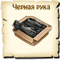

Получено: файл; исходный URL. Оригинальные байты, полученные по ссылке; идентичность архиву не подтверждена.
Чёрные руки
ВКонтакте; дата источника не указана- Тип
- Растения
- Версия и дата
- ВКонтакте; дата источника не указана
Дополнительные изображения

Данные по источнику · ВКонтакте · дата источника не указана
Предварительно: один источник; требует сверки. Требуется сверка.
- Цена посева
- 550 монет
- Рост
- 12 ч
- Опыт
- 4
- Продажа
- 617 монет


Данные по источнику · браузерная версия; платформа не указана · дата редакции не установлена
Предварительно: Содержимое списка: изображения и колонки могут терять смысл при извлечении текста; отдельная страница и дата не проверены. Подписи alt иногда ошибочны.. Требуется сверка.
- Текст карточки из каталога
- Растение: Рецепт с ним: Используется: Цена покупки: 550 Цена продажи:617 Время роста: 12 часов Даёт опыта: 4 5 +200 Готовность: 1 час Затраты: 2950 Продажа: 5000
Данные по источнику · браузерная игра, платформа не указана · 27.03.2015
Предварительно: Прочитана отдельная статья; данные исторические, независимость от других справочников не установлена.. Требуется сверка.
- Выращивание
- 52 уровень; семена 550 монет; рост 12 часов; 4 опыта за урожай грядки.
- Другие источники
- По статье семена выпадают из Ромашкового яйца, рулеток футбольных флагов и заданий.
- Применение и конфликт
- Статья указывает сталь у поваров, болты на АЭС, углеволокно в Эйфелевой башне и строительство Пиратского флага. В других перенесённых справочниках болты отнесены к Эйфелевой башне, углеволокно — к АЭС; возможно, названия зданий перепутаны. Не исправлено без дополнительной сверки.
Данные по источнику · ВКонтакте, исторический фанатский справочник · дата редакции не установлена
Предварительно: Историческая фанатская таблица: цены и время могут зависеть от версии. Заявления об отсутствии применения относятся только к моменту составления; независимость источников не установлена.. Требуется сверка.
- Текст записи
- Черные руки Цена: 550 Растет: 12час. Опыт: 4 Продажа: 617 Ингридиент для:Сталь Нужен для строительства:Вавилон Пиратский флаг Нужен для производства:Болты, Углеволокно
Данные по источнику · браузерная игра; платформа не указана · 06.05.2012 — дата публикации; дата редакции неизвестна
Предварительно: Сведения одного исторического фанатского сайта, не текущие цены или универсальные правила. Единицы и подписи-иконки могли не попасть в текст; сопоставление имён в единственном и множественном числе предварительное. Страница связана ссылками с zombi-ferma.ru, независимость не установлена.. Требуется сверка.
- Текст и числовые данные страницы
- Чёрная рука Уровень игрока: 52 Цена семян: 550 Цена продажи: 617 Опыт за сбор грядки: 4 Время созревания: 12 часов
Связанные сущности
нет проверенных связей — требуется сверка.